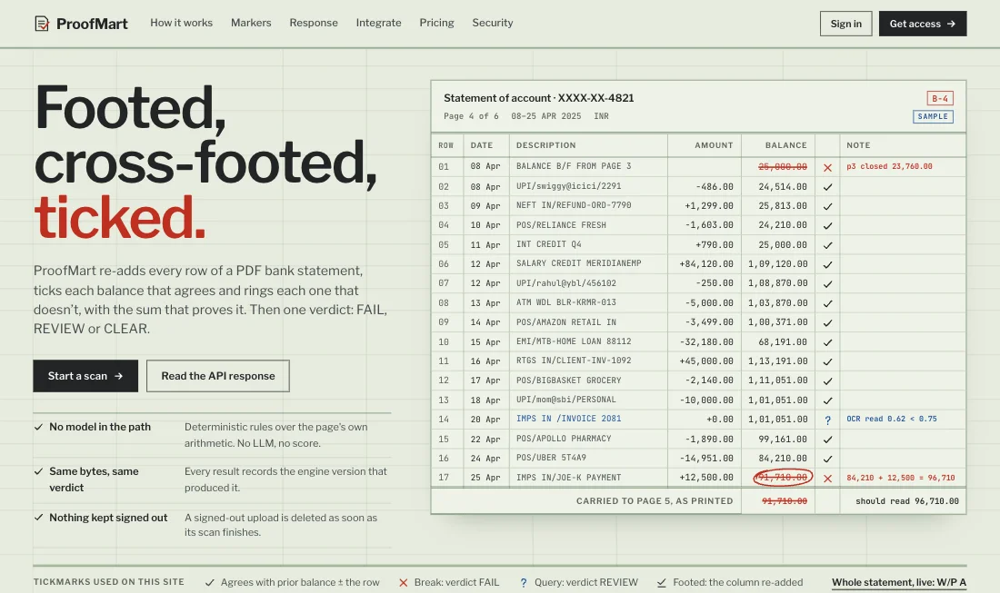
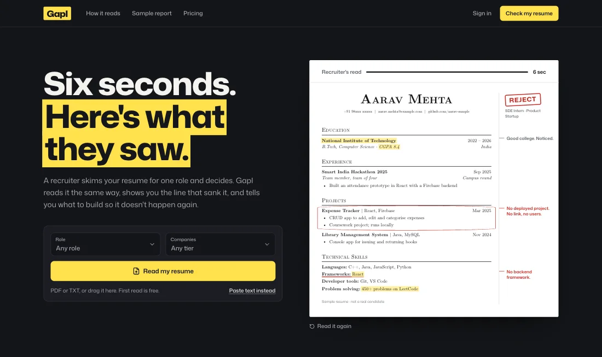

Deepanshu
Lathar
Full-stack & AI engineer.
B.Tech CSE student at LPU (2024–28) who ships full-stack and AI products: a live document-forensics API, an application-readiness engine with a multi-provider AI gateway, and internal attribution tooling inside a live startup.
- Now
- AI Intern, Founder’s Office · PicaPool
- Based in
- Delhi NCR, India · IST (UTC+5:30)
- Available
- Summer 2027 internships
Most people pick a lane. I’m trying to understand the entire highway.
- Local time
- —
- IST
- Last commit
- —
- Replies
- within a day
Built, deployed, and labeled honestly.
Each stop states what the project is, the decision behind it, and its real status. Source links go to the real repositories, live links go to running deployments — and where there is no live demo, I say why.
-
ProofMart
Live · betaEdited bank statements and invoices pass a visual check. ProofMart is a document-forensics API: upload a PDF and get back a structured report of findings — each pinned to its place on the page, each with the arithmetic that proves it.
Technical decision: check the document’s own math instead of guessing at pixels — running balances, cross-page carry-forwards, duplicate transactions — so every flag is explainable. Tesseract OCR covers scanned pages; Next.js route handlers expose it all as an API.
About 9,200 lines of TypeScript, covered by 15 Vitest suites and 4 Playwright end-to-end specs. Reports are signed with Ed25519; webhooks are HMAC-verified.
- Next.js
- TypeScript
- Supabase
- pdf.js
- Tesseract.js
- Vercel Blob
- Razorpay

-
Gapl
Live · personal projectCandidates get rejected without ever learning why. Gapl simulates a recruiter’s screen of your resume against a target role and company tier — ATS fit, readiness, the exact gaps — then builds a week-by-week roadmap to close them.
Technical decision: every analysis goes through a multi-model AI gateway that fails over across Groq, OpenAI, Anthropic and Gemini, so one provider’s outage never fails a scan. Email links are rewritten to a tracking subdomain by Next.js middleware for 30-day last-touch attribution.
- Next.js
- TypeScript
- Firebase
- Firestore
- Groq
- OpenAI
- Anthropic
- Gemini
- Razorpay
- Resend

-
College-CLI
Working · pre-releaseStudents lose the first week of every course to installing the wrong tools. College-CLI maps a course to exactly what it needs —
npx college-cli lpu/cse-301detects, plans, installs and verifies the setup on a fresh laptop.Technical decision: courses are data, not code — a schema-validated registry fetched from GitHub, cached for 24 hours, with a bundled fallback for campus proxies. A version newer than the course allows is reported as a conflict, not a doomed install.
- TypeScript
- Node.js
- YAML registry
- Windows preflight
- GitHub Actions
Source No live link yet — npm release pending
-
UniConnect LPU Connect
Built · demo offline60,000 students on one campus, and meeting anyone outside your class still depends on luck. UniConnect is anonymous campus chat and video: random ten-minute matches, with identities revealed only when both people opt in.
Technical decision: privacy by mechanism — a mutual “Enjoy” unlocks friend requests before any name is shown. Socket.IO handles matching and chat, PeerJS/WebRTC carries peer-to-peer video, and every message is rate-limited and sanitised. Ships as an Android app via Capacitor.
- React 19
- Vite
- Socket.IO
- WebRTC
- Express 5
- SQLite
- Capacitor
Source No live demo — currently offline
A timeline, not a list.
Current roles first, then past roles by most recent — what I owned and what it produced.
-
Jul 2025 — Present
CurrentAI Intern · Founder’s Office
PicaPool · Delhi · On-site
- Built a read-only AI data analyst over a 79-table PostgreSQL schema that parses and validates LLM-generated SQL before it runs, removing the injection surface; deployed a Telegram RAG bot on the analytics layer.
- Shipped 15+ production internal tools in 8 weeks, including a CRM with role-based access, a WhatsApp Business API dashboard, campaign attribution and merchant onboarding, with the CTO advising on database design.
- Engineered event-fingerprinting attribution across on-ground and digital funnels, replacing download counts with per-channel visibility for spend decisions.
- Automated daily KPI digests and n8n workflows; the attribution and CRM tooling supported a two-month campus push that reached 3,000+ students.
-
Jan 2026 — May 2026
Product & Growth Intern · Founder’s Office
UniLyf · Remote · London Area, UK
- Instrumented a demand-validation framework across 200+ profiled beta users; cohort analysis isolated the actions that correlated with Day-7 retention.
- Led a cross-functional team of 6 across growth, content and deployment, owning sprint planning, task allocation and release accountability for a pre-launch product.
- Turned the signals into a phased go-to-market plan and launch priority order, and grew a 100+ member insider community as the first testing cohort.
-
Jun 2025 — Feb 2026
Web Development & Growth · Freelance
Delhi
- Launched and ran a Shopify storefront for Spraykart LLP: store setup, catalogue configuration and uninterrupted orders.
- Ran SEO and lead generation for YourProfessional, a chartered-accountancy practice, lifting organic visibility and bringing in inbound client leads.
-
2025 — Present
Campus roles
LPU and Delhi
Three campus roles
- LPU Division of Admissions, part-time intern (Jan 2026 — present): SEO-optimised content and storytelling for the university’s channels.
- Student Organization Cell, HR Coordinator (Jul 2025 — Aug 2026) after Event Coordinator (Mar — Jul 2025); member to HR Coordinator of a 10–15 person team in four months.
- INGLU, Regional Manager intern (May — Jul 2025): campus outreach, events and digital promotions.
Ask about me.
An interactive terminal: type help, or just ask a question about me. The AI answers, powered by Groq.
Receipts, not adjectives.
Every number here traces back to a campaign, a repository, a program, or a team. Nothing is borrowed.
- 3,000+students reached by a two-month campus acquisition push, on attribution and CRM tooling I built at PicaPoolGrowth
- 15+production internal tools shipped in 8 weeks at PicaPoolEngineering
- 1,000+flat-launch submissions collected in 72 hours for a campus productLaunch
- 200+profiled beta users in UniLyf’s demand-validation frameworkValidation
- 6-personcross-functional team led at UniLyf across growth, content and deploymentLeadership
- —open-source repos on GitHub, counted liveOpen source
- 2products live in production: ProofMart and GaplProducts
- 30 daysof writing in public completed — essays on GTM, deadlocks, and retentionWriting
- 1,500+LinkedIn followers built through consistent public writingCommunity
- Grade Ain Advanced Backend Development (Node.js, Express, MongoDB) at LPU’s Centre for Professional EnhancementTraining
Credentials.
- McKinsey Forward ProgramMcKinsey & Company
- Advanced Backend Development, Grade ALPU Centre for Professional Enhancement
- Data Analytics Job SimulationDeloitte Australia, via Forage · ID
BaQLf9u7dkdyLE4L2 - Young Innovator Internship Challenge, Edition 2Scaler School of Technology
- Digital MarketingHubSpot Academy
- C Programmingiamneo, an NIIT venture · ID
25dM7bj5dk7bI5Am0B21
All listed on LinkedIn.
Tools I actually ship with.
The first line in each row is what ships in a project named beside it. The second line lists other tools I have used.
- Languages
- TypeScript, JavaScript, Python, C++, SQLAlso: C (certified)
- TypeScript runs ProofMart, Gapl and College-CLI end to end; JavaScript powers UniConnect’s client and signaling server. Python is my analytics language at PicaPool, C++ ran the ESP32 firmware in the Vehicle Pollution Monitor — and SQL is where the attribution ledger lives.
- Frontend
- React, Next.js, Tailwind, Vite, HTML, CSS
- Next.js ships both ProofMart and Gapl — UI, API routes and middleware in one codebase. React + Vite drive UniConnect’s chat and video client, and Tailwind kept PicaPool’s campus experiment pages shipping in hours, not days.
- Backend
- Node.js, Express, REST, Socket.IO, WebRTCAlso: FastAPI
- Next.js route handlers serve ProofMart’s inspect, upload and billing APIs. Node + Express 5 run UniConnect’s API and signaling server, with Socket.IO carrying real-time matching and chat and WebRTC carrying peer-to-peer video.
- Data & infra
- PostgreSQL, Supabase, Firebase, SQLite, MongoDB, DockerAlso: AWS
- Supabase (Postgres) holds ProofMart’s users and documents, with files in Vercel Blob. Firestore runs Gapl’s users, reports and email campaigns, and SQLite keeps UniConnect’s friend graph light. MongoDB and Docker ran the Advanced Backend capstone.
- AI & Tools
- LangGraph, n8n, OpenAI, Anthropic, Gemini, Tesseract OCR, Git, Linux, VercelAlso: LangChain, OpenCV
- LangGraph agents and n8n automations run PicaPool’s internal tooling. Gapl sends every analysis through a multi-model AI gateway (Groq, OpenAI, Anthropic, Gemini); ProofMart runs Tesseract OCR on scanned pages. Git, Linux and Vercel hold the pipeline together.
The ledger updates itself.
This section reads the GitHub API live — stats, language mix, and recent pushes; if the API is unreachable, tiles stay blank instead of showing stale numbers. syncing…
Contribution calendar live
Loading contributions…
Recent pushes api
- Recent pushes load live from the GitHub API — view on GitHub.
Languages live
Loading languages…
Contributions come from GitHub’s own calendar (private work included, refreshed hourly); repos and languages from the GitHub API — never hard-coded.
All repositoriesNotes from the ledger.
Essays and build notes from my 30-day writing challenge — on growth, systems and the odd personal milestone.
-
The campus GTM playbook I wish I had
What actually moves a campus: pools, timing, and measurement — not posters. The playbook behind PicaPool’s campus launches, with attribution wired in from day one.
Read on LinkedIn Essay · featured -
Deadlocks are an organizational bug
Two teams waiting on each other is a systems problem — here is how I debug it.
Read on LinkedIn Essay -
Retention is a metric, not a mood
Cohorts, curves, and the questions I ask before trusting any dashboard.
Read on LinkedIn Essay -
Retiring the laptop that raised me
Five years, two degrees of heat, one very patient machine. A goodbye.
Read on LinkedIn Personal
I de-inflate resumes. Including my own.
I’m a Computer Science student and builder working across AI, product, growth, and execution. I’ve spent my time in early-stage startups, where the fastest learning happens by being involved in everything.
At PicaPool, I work in the Founder’s Office, building AI systems, internal tools, analytics infrastructure, attribution systems, and automation. At UniLyf, I worked across product and growth, using user behaviour and retention data to shape product and launch decisions. I also build and ship products independently — including Gapl and ProofMart.
What I care about:
- Building useful products
- Understanding distribution
- Creating leverage through technology
- Learning how companies scale
- Turning ideas into shipped systems
I like being close to both the problem and the implementation. Build. Measure. Learn. Iterate.
If you need systems that explain themselves, let’s connect.
I reply within a day — usually faster. Internships, freelance builds, open-source collabs, or just a good argument about attribution models.
deepanshulathar [at] gmail.com- Base
- Delhi NCR, India
- Time zone
- IST (UTC+5:30)
- Status
- Open to Summer 2027 internships